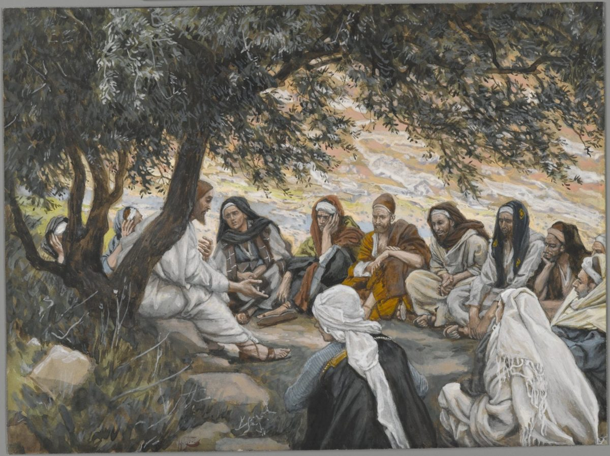

Mateo 10 — La Traducción Mister

Tissot pintó esta escena tras dos viajes de investigación a Palestina y Siria, entonces bajo dominio otomano, en la década de 1880, dibujando el paisaje, la vestimenta y modelos locales en el propio lugar para que sus cuatrocientas acuarelas del Evangelio buscaran verosimilitud etnográfica en vez de la ambientación europea que la mayoría de los pintores anteriores habían usado sin pensarlo dos veces — las sencillas túnicas de lana y los pañuelos a rayas aquí están tomados de lo que vio usar en la región, no inventados en un estudio de París. ⚠ El resultado es deliberadamente poco glamoroso: sin aureola, sin luz sobrenatural, sin púlpito elevado — solo un maestro y doce hombres de aspecto cansado sentados en el suelo bajo un árbol, lo cual está posiblemente más cerca de cómo habría lucido en realidad una instrucción al aire libre antes de una misión peligrosa y sin paga («ni oro, ni plata... ni bolsa para el camino», 10:9-10) que cualquier retablo dorado. Compárese con la ambientación deliberadamente CONTEMPORÁNEA de la Roma de 1600 que Caravaggio eligió para la escena de la vocación un capítulo atrás — dos pintores, con casi tres siglos de diferencia, apostando en direcciones opuestas sobre cómo hacer que una escena antigua se sienta real para su propio público.
_-_James_Tissot.jpg){kind=link}
Notas del traductor
⚠ La única vez que Mateo usa la palabra. Mateo llama «discípulos» a los Doce (mathētai) en unos setenta versículos y «apóstoles» exactamente una vez: aquí, en el momento del envío, y nunca más. La palabra significa «los ENVIADOS», y Mateo solo la toma cuando enviar es el punto mismo; en todo lo demás, antes y después, siguen siendo «discípulos», aprendices. La RV 1909, la RV60, la NVI y la TNM 1987 imprimen todas «apóstoles».
Seis parejas, no doce nombres. Las conjunciones griegas («Simón… Y Andrés su hermano… Santiago… Y Juan su hermano») agrupan la lista en seis parejas en vez de un pase de lista, y Marcos registra que así fueron enviados, «de dos en dos» (Marcos 6:7). El emparejamiento no es invento de esta traducción; está dentro de la oración. La RV 1909, la NVI y la TNM 1987 lo conservan con puntos y comas, y la RV60 aplana el v. 3 en una sola serie de comas.
⚠ Un revolucionario y un colaborador, entre los mismos doce. Simón EL CANANEO no es «de Canaán»: Kananaios transcribe el arameo qan’an, «celoso», la misma palabra que Lucas traduce sin más como «Simón el CELOTE» (Lucas 6:15), y en el siglo I ese título marcaba a un hombre comprometido con la resistencia armada contra Roma. Aquí la RV 1909 imprime «el Cananita». La RV60 dice «el cananista». La TNM 1987 dice «el cananita». La NVI trae la palabra de Lucas, «el Zelote». Está a tres nombres de Mateo el recaudador de impuestos (véase la entrada), cuyo antiguo oficio era cobrar los ingresos de Roma; la RV 1909 y la RV60 dicen «el publicano»; la NVI dice «el recaudador de impuestos»; la TNM 1987 dice «el recaudador de impuestos». La lista no comenta la yuxtaposición; contiene a los dos.
Dos más que otras páginas de este sitio ya resuelven. «Bartolomé» (literalmente «hijo de Tolmai», un patronímico y no un nombre de pila) es, por una larga tradición, el mismo hombre a quien Juan llama Natanael: los dos nunca aparecen juntos ni aparecen por separado, y cada Evangelio usa uno solo de los dos nombres. Y «Tadeo» ya tiene su propia entrada como Judas hijo de Jacobo, que expone en detalle la cuestión de los manuscritos: algunos testigos leen «Lebeo, por sobrenombre Tadeo», justo la lectura que imprime la KJV inglesa y, en español, la RV 1909 y la RV60; la NVI y la TNM 1987 tienen «Tadeo».
⚠ Judas queda al final, con una cláusula que ningún otro recibe. Los demás nombres van solos o en pareja; solo Judas Iscariote lleva pegada una oración de relativo: «el que TAMBIÉN lo entregó». Kai, «también», trabaja de verdad: dice que la traición fue una cosa más que hizo este hombre, añadida casi como una ocurrencia tardía a un nombre que, en el momento de esta lista, todavía no había hecho nada malo. El verbo griego es paradidōmi, «entregar», el de las oraciones de «los entregarán» de los vv. 17, 19 y 21, y aquí se conserva. La RV 1909 dice «también le entregó». La RV60 dice «también le entregó». La NVI deja caer el «también»: «el que lo traicionó». La TNM 1987 pone en su lugar una indicación de tiempo: «el que más tarde lo traicionó». Véase la entrada sobre cómo los dos relatos del libro sobre su muerte no coinciden.
⚠ Una restricción que el final de este Evangelio levantará de manera expresa. «No vayan… por camino de gentiles… vayan más bien a las ovejas perdidas de la casa de Israel» es una frontera dura, dicha dos veces para enfatizar, y está en el mismo libro que termina con «hagan discípulos de TODAS LAS NACIONES» (Mateo 28:19): justo la palabra ethnē, «naciones/gentiles», vedada aquí, se vuelve allí el destino. La biblioteca no suaviza los dos mandatos en uno; esta misión tiene un alcance, y cambia. La RV60 dice «camino de gentiles». La TNM 1987 dice «el camino de las naciones». La NVI dice «comunidades de los gentiles».
La tercera voz que dice la misma oración. «El reino de los cielos se ha acercado» es la proclamación del propio Juan el Bautista (3:2) y el primer mensaje de Jesús cuando la tomó (4:17), con un pequeño cambio al principio: Juan y Jesús dicen «porque» (gar) donde a los Doce se les da «diciendo que» (hoti). Ahora es también la oración asignada a los Doce: las mismas cinco palabras griegas en una tercera boca, ya no un heraldo que anuncia a un rey ni un rey que se anuncia a sí mismo, sino una comisión transmitida línea abajo. La RV 1909 dice «se ha acercado». La RV60 dice «se ha acercado». La TNM 1987 dice «se ha acercado». La NVI dice «está cerca», que pierde el perfecto de ēngiken.
«Recibieron sin pagar; den sin cobrar». La instrucción de no llevar dinero, ni alforja, ni ropa de repuesto, ni siquiera un bastón (véase más abajo sobre la cruz sobre el otro objeto de madera por el que se recuerda este capítulo) no es ascetismo por sí mismo; es la consecuencia práctica del principio dicho primero: la autoridad de sanar que acaba de darse en el v. 1 no se compró, así que no ha de venderse. ⚠ Conviene decirlo con honestidad: la versión de Marcos de este mismo envío (6:8–9) permite un bastón y sandalias, donde este capítulo prohíbe las dos cosas. Las dos listas no coinciden del todo, y esta traducción imprime las palabras de Mateo sin armonizarlas hacia Marcos. En el v. 9 la TNM 1987 dice «No consigan», el verbo de «adquirir»; la RV60 «No os proveáis» y la NVI «No lleven». En el v. 10 la TNM 1987 dice «dos prendas de vestir interiores» donde el griego dice «túnicas», y el «bordón» de la RV 1909 y la RV60 es el «bastón» de la NVI y la TNM 1987; la RV60 dice «calzado» y la RV 1909 «zapatos» donde esta traducción dice «sandalias».
La paz que se puede retirar. «Que venga su paz sobre ella… que su paz vuelva a ustedes» trata eirēnē (véase la entrada del diccionario) como algo casi físico: una bendición dicha que, si no encuentra una casa digna donde posarse, vuelve al que la dijo. En ningún caso se pierde nada; la oración está hecha para que el mensajero nunca salga más pobre por haberla ofrecido. La RV60 dice «vuestra paz vendrá sobre ella… vuestra paz se volverá a vosotros», la TNM 1987 «venga sobre ella la paz que le desean» y la NVI «que la paz de ustedes reine en él».
⚠ Peor que Sodoma. Sodoma, el sinónimo bíblico de catástrofe (Génesis 19), es ahora la vara con la que se mide una suerte peor: a un pueblo que ni siquiera escucha a doce hombres sin armas se le dice que le irá peor en el día del juicio que a la ciudad sobre la que Dios hizo llover fuego. La comparación no es retórica de relleno; es tan severa como llega el vocabulario bíblico del juicio, dirigida a gente que no hizo más que negarse a abrir una puerta. La RV60 y la NVI añaden «castigo»; el griego no lo dice.
El tono gira sin aviso. El v. 15 todavía trata de pueblos que solo se niegan a escuchar; el v. 17 son concilios, azotes en las sinagogas, gobernadores, reyes y familiares que se entregan unos a otros a la muerte. Nada en el texto señala el cambio como un salto adelante a una misión posterior y más dura; se presenta como el mismo discurso, continuo, con el peligro nombrado a toda su fuerza una vez mencionados los lobos.
«Inocentes», no solo inofensivos. Akeraioi (literalmente «sin mezcla, no adulterados») es «sencillos» en la RV 1909, la RV60 y la NVI, e «inocentes» en la TNM 1987, que es lo que imprime esta traducción; en inglés la KJV dice «harmless», la ASV dice «harmless» y la DRB dice «simple». Todos son sentidos reales de la palabra, pero ninguno capta del todo que el griego describe pureza de MOTIVO (nada mezclado con la intención de paloma) y no mera falta de agresividad o ingenuidad. Y phronimoi: la RV 1909 dice «prudentes». La RV60 dice «prudentes». La NVI dice «astutos». La TNM 1987 dice «cautelosos».
⚠ «No son ustedes los que hablan»: una promesa, no una excusa para no preparar nada. A los discípulos se les dice que no se angustien de antemano por lo que dirán al ser interrogados, porque el Espíritu de su Padre hablará en ellos en aquella hora. ⚠ Esto se dirige a una circunstancia concreta y extrema, el arresto y el juicio por el nombre, y esta biblioteca señala, sin resolverla, la larga historia de esa promesa estirada para cubrir la falta de preparación ordinaria en escenarios mucho menos peligrosos que un tribunal de sinagoga. La TNM 2019 dice «no se angustien». La RV 1909 dice «no os apuréis». La RV60 dice «no os preocupéis». La NVI dice «no se preocupen». La TNM 1987 dice «no se inquieten», y escribe «el espíritu de su Padre» con minúscula.
La familia, vuelta peligro. «El hermano entregará a la muerte al hermano… los hijos se levantarán contra los padres» anticipa casi al pie de la letra lo que los vv. 35–36 dirán que es el PROPÓSITO real de esta misión; véase la nota más amplia allí, donde la misma imagen se cita directamente del profeta Miqueas.
⚠ «No habrán terminado de recorrer las ciudades de Israel hasta que venga el Hijo del Hombre»: el versículo más difícil del capítulo, impreso con sus lecturas y sin zanjarlo. El griego es heōs an, «hasta que», donde el original inglés de esta traducción imprime «antes de que», que dice lo mismo en esa lengua; la TNM 1987 tiene «hasta que llegue el Hijo del hombre». La RV60 dice «antes que venga». La NVI dice «antes de que venga». Tomado al pie de la letra, esto promete que alguna «venida» del Hijo del Hombre ocurriría durante esta misión, o al menos dentro de una vida, y la historia no registra tal llegada visible. Circulan cuatro lecturas, ninguna demostrable solo con la oración: (1) se refiere a la venida del ESPÍRITU en Pentecostés; (2) se refiere a la caída de Jerusalén en el año 70 d. C., una «venida en juicio» real y fechable; (3) todo el discurso mezcla esta misión concreta con otra más larga y futura que los discípulos representan, así que «ustedes» se dirige a la iglesia a lo largo del tiempo y no solo a los Doce en aquella hora; (4) trata genuinamente de la parusía, y Jesús, como otros profetas, comprime un horizonte cercano y uno lejano en una sola oración sin marcar la costura (compárese cómo los oráculos de Isaías corren juntos la Asiria cercana y el Mesías lejano). La biblioteca expone las cuatro y no adopta ninguna.
La acusación del capítulo anterior, ahora con nombre y entregada a los discípulos como PROMESA. En Mateo 9:34 los fariseos dijeron solo «el PRÍNCIPE de los demonios», sin nombre propio. Aquí, un capítulo después, el título se pronuncia por fin: Beelzebul, probablemente una corrupción burlona del dios filisteo Baal-zebub, «señor de las moscas» (2 Reyes 1, ya en estas páginas), reformado hacia «señor del estiércol» o «señor de la morada (celestial)» según la raíz semítica que se lea, y Jesús repite la calumnia contra sí mismo como la línea de base que sus seguidores deben esperar: si al dueño de la casa lo llamaron así, la casa no recibirá mejor trato. La lógica de «el discípulo no está por encima de su maestro» se vuelve, por una vez, consuelo frío y no ánimo. La RV 1909 imprime «Beelzebub». La RV60 imprime «Beelzebú». La NVI imprime «Beelzebú». La TNM 1987 imprime «Beelzebub». La TNM 2019 imprime «Belcebú».
⚠ Dos asesinos distintos, dos temores distintos. Los verdugos humanos pueden acabar con el cuerpo y nada más; solo Dios, dice este versículo, puede destruir psychē Y cuerpo a la vez, y el lugar nombrado para esa destrucción total es la Gehena, el valle que este sitio ya conoció dentro del Sermón del Monte (5:22). ⚠ El versículo no es una amenaza dirigida a los discípulos; es la razón por la que no necesitan temer a los verdugos, que SÍ son una amenaza real e inmediata: un Dios que puede más que cualquier tirano humano es aquí el fundamento del coraje, no del espanto. La RV 1909 dice «el infierno». La RV60 dice «el infierno». La NVI dice «el infierno». La TNM 1987 conserva «el Gehena».
Gorriones, y una moneda tan pequeña que basta para probar el punto. El assarion era una moneda pequeña de cobre, la dieciseisava parte de un denario: dos gorriones por casi nada, y ni uno de ellos cae «sin su Padre». La RV 1909 dice «un cuarto». La RV60 dice «un cuarto». La NVI dice «una monedita». La TNM 1987 dice «una moneda de poco valor» y añade «[el conocimiento de]» entre corchetes; la NVI añade «sin que lo permita el Padre», dos maneras de explicar lo que el griego deja en un simple «sin su Padre». ⚠ La KJV inglesa imprime «farthing», un cuarto de penique antiguo y una moneda retirada hace mucho, por lo que el lector moderno puede perder cuán BARATA se quiso la comparación original. Los cabellos de la cabeza, contados, son el mismo argumento llevado un paso más: si Dios lleva la cuenta de lo que de veras está por debajo de la atención, los discípulos que enfrentan concilios y reyes tampoco están por debajo de ella.
La gramática es el argumento. «El que me confiese… yo también lo confesaré… el que me niegue… yo también lo negaré» está hecho como un espejo estricto, el mismo verbo (homologeō/arneomai) dicho del discípulo y luego de Jesús, el mismo lenguaje de tribunal («delante de los hombres» / «delante de mi Padre») a ambos lados de cada par. ⚠ Pedro hará exactamente la segunda mitad de esta oración, tres veces, junto al fuego de una criada (Mateo 26:69–75), una escena que este dicho no sabe que viene y que no suaviza de antemano. La RV60 dice «confiese… niegue». La NVI dice «confiese… niegue». La RV 1909 dice «confesare… negare». La TNM 1987 dice «confiese unión conmigo… repudie». La TNM 2019 dice «se declara a mi favor… rechaza».
⚠ Junto a «felices los que hacen la paz». Este es el mismo libro que abrió el Sermón del Monte con una bienaventuranza para los que hacen la paz (5:9) y que después hará que Jesús mande guardar una espada con «todos los que toman espada, por espada perecerán» (Mateo 26:52). La biblioteca expone la tensión con claridad en vez de leer machaira como pura metáfora para hacerla desaparecer: sea lo que sea que la espada represente aquí, el mismo Evangelio recomienda en otro lugar la paz y prohíbe el arma literal sin aparente vergüenza de sostener las dos posturas.
⚠ Un eco de Miqueas, no una coincidencia. «Los enemigos del hombre serán los de su propia casa» sigue de cerca a Miqueas 7:6 («los enemigos del hombre son los hombres de su casa»), y la lista que lo rodea —el hijo contra el padre, la hija contra la madre, la nuera contra la suegra— sigue la lista de Miqueas lo bastante de cerca como para que sea un eco, aunque Mateo no da fórmula de introducción y las palabras griegas son suyas. El profeta describía el colapso moral de toda una sociedad; Jesús aplica el mismo lenguaje a lo que la lealtad a él, en concreto, costará dentro de una familia a la vez. La NVI imprime los vv. 35–36 entre comillas, como cita: «los enemigos de cada cual serán los de su propia familia». La TNM 1987 traduce nymphē como «la esposa joven» donde esta traducción dice «nuera».
⚠ «Tome su cruz», antes de que la cruz se haya mencionado siquiera una vez. Esta es la PRIMERA aparición de stauros en todo el Evangelio de Mateo, y Jesús todavía no ha dicho una sola palabra sobre su propia ejecución venidera (la alusión más cercana hasta ahora fue el velado «cuando el novio les sea quitado», Mateo 9:15). A los discípulos se les manda cargar una cruz propia antes de que la narración les haya dicho a ELLOS, o al lector, que Jesús va a cargar una. La crucifixión era un castigo cuyo travesaño cargaba a cuestas el propio condenado hasta el lugar de su ejecución, así que la imagen no es una penalidad genérica. Nombra una de las muertes más degradantes que Roma tenía, y la pide como condición para ser «digno». La RV 1909 dice «cruz». La RV60 dice «cruz». La NVI dice «cruz». La TNM 1987 traduce aquí stauros como «madero de tormento», y la TNM 2019 como «madero de tormento» también: una decisión doctrinal de esa versión sobre la forma del instrumento.
La paradoja que sobrevive en todos los Evangelios. «El que halle su vida la perderá, y el que pierda su vida por causa de mí la hallará» vuelve en todos los Evangelios: otra vez en Mateo (16:25), en Marcos (8:35), dos veces en Lucas (9:24; 17:33) y en Juan (12:25). Psychē se traduce aquí «vida», la misma palabra traducida «alma» once versículos antes (v. 28): un solo sustantivo griego haciendo los dos trabajos, justo la ambigüedad que esta traducción está hecha para conservar y no para resolver eligiendo de una vez una palabra española. La RV 1909 dice «alma» en el v. 28 y «vida» en el v. 39, como esta traducción. La RV60 hace lo mismo, y la NVI también. La TNM 1987 conserva «alma» en los dos.
⚠ Un principio jurídico antiguo, dicho como teología. «El que los recibe a ustedes me recibe a mí, y el que me recibe a mí recibe al que me envió» corre con la misma lógica del concepto legal judío del shaliaj, un agente autorizado: tratar con un representante debidamente comisionado ES, legalmente y no solo por sentimiento, tratar con quien lo envió. El capítulo que abrió con Jesús dando a los Doce su propia autoridad (v. 1) se cierra haciendo correr esa autoridad toda la cadena hasta el Padre.
La recompensa se mide por la acogida, no por el resultado. La recompensa de profeta para quien recibe a un profeta «por ser profeta», la recompensa de justo para quien recibe a un justo «por ser justo»: la recompensa no es por juzgar bien de antemano quién cuenta como profeta; es por la postura misma de acogida, extendida por lo que alguien dice ser. La RV60 dice «recompensa». La NVI dice «recompensa». La RV 1909 dice «merced». La TNM 1987 dice «galardón».
El regalo más pequeño, nombrado a propósito. Tras gobernadores, reyes, traición y la cruz, la última promesa del capítulo se ata a un vaso de agua fría: el acto de hospitalidad más barato y menos exigente que se pueda imaginar, dado a uno de «estos pequeños» solo «por ser discípulo». La escala del discurso va, en sus dos últimos versículos, del costo más extremo imaginable al más pequeño, y cuenta los dos. La TNM 1987 dice «tan solo un vaso de agua fría». La NVI dice «siquiera un vaso de agua fresca».
Patrones que vale la pena recordar
Dónde esta traducción conserva las palabras exactas y distintas: «apóstoles» exactamente donde Mateo mismo la usa, una vez, y nunca más; «Cananeo» sin normalizarlo en silencio a «Celote» (la palabra de Lucas, no la de Mateo), con el sentido explicado en la nota; «De cierto les digo» idéntico en sus tres apariciones en este capítulo (vv. 15, 23, 42), como desde el capítulo 5; «alma» y «vida» impresos los dos para psychē según el contexto, sin aplanarlos a una sola palabra española; y «espada» como la palabra llana e incómoda que es, sin glosarla en el propio versículo como metáfora.
Dónde va por su cuenta: el tratamiento de cuatro lecturas, sin voto, de «hasta que venga el Hijo del Hombre» (v. 23), en vez de adoptar en silencio la lectura más cómoda; e imprimir la instrucción de Mateo sin bastón (v. 10) junto a la versión de Marcos que lo permite, en la nota, en vez de armonizar los dos relatos hasta que coincidan.
Ecos pagados. «El reino de los cielos se ha acercado»: la oración de Juan (3:2), luego la del propio Jesús (4:17), ahora entregada a los Doce como su encargo; la acusación de Beelzebul, sin nombre en Mateo 9:34 y nombrada aquí; la Gehena, ya conocida en 5:22 y reunida ahora con su historia completa bajo Tofet; y la sombra de «quitado» sembrada en Mateo 9:15, respondida ahora por la primera mención de la cruz en este capítulo.
Ecos sembrados. La fórmula de confesar/negar (vv. 32–33), que espera a Pedro para cumplir su segunda mitad en Mateo 26:69–75; «todos los que toman espada, por espada perecerán» (Mateo 26:52), en tensión real con el «no vine a traer paz, sino espada» de este capítulo; y la misión a los gentiles que este capítulo cierra de manera expresa (v. 5), a la espera de abrirse de par en par en Mateo 28:19.
Siguiente en este libro: el capítulo 11: Juan el Bautista, ahora en prisión, envía a sus propios discípulos a hacer la pregunta que este capítulo nunca le dejó hacer en persona: «¿Eres tú el que ha de venir, o esperamos a otro?»